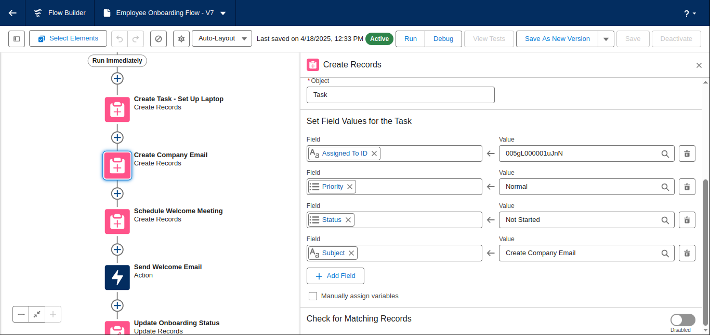
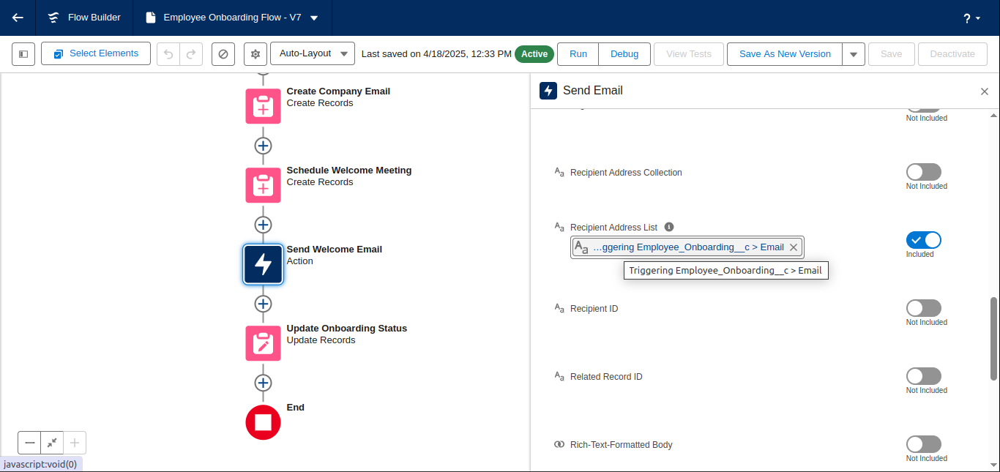
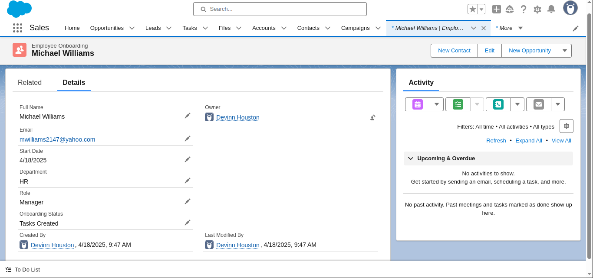
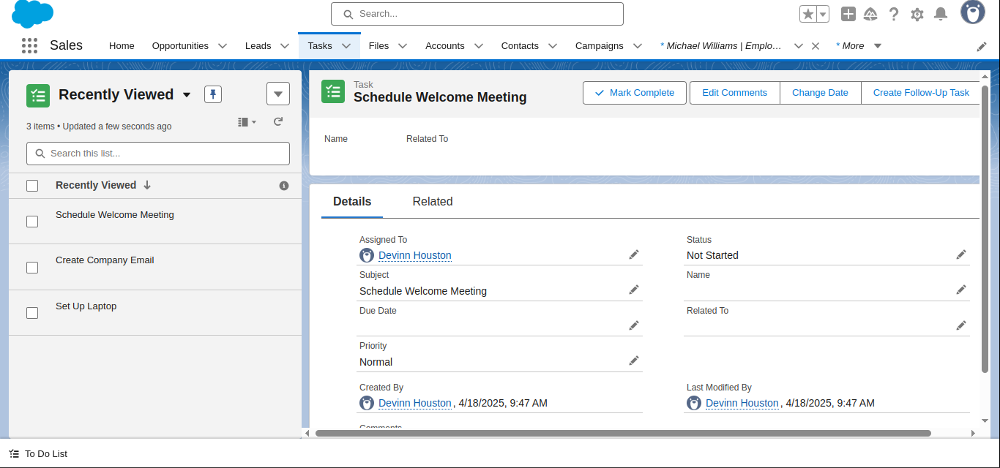
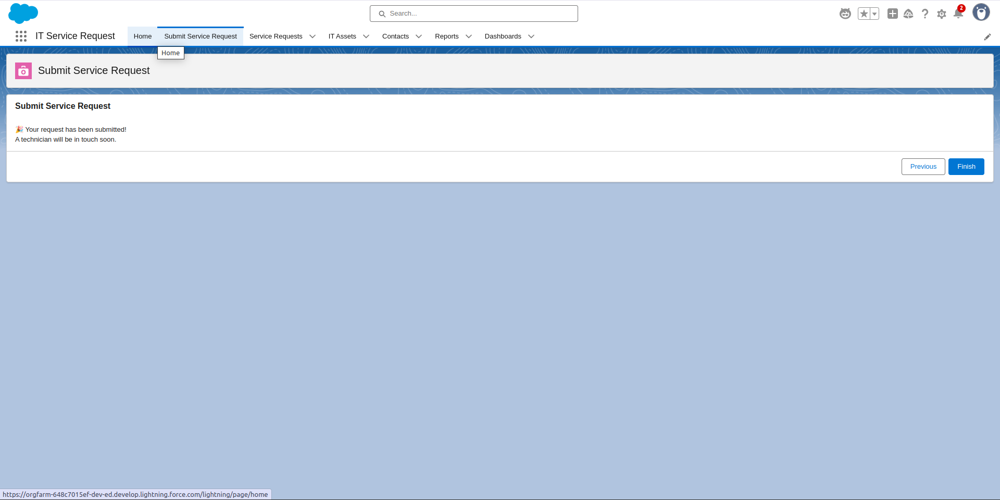
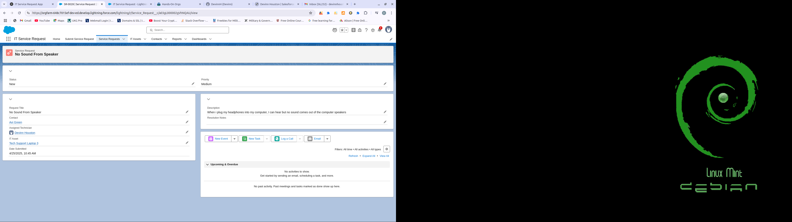
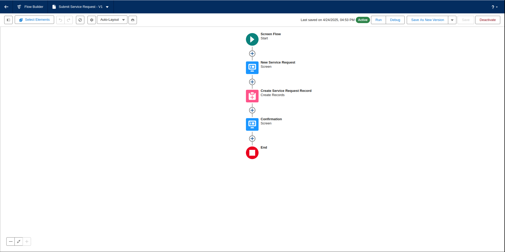
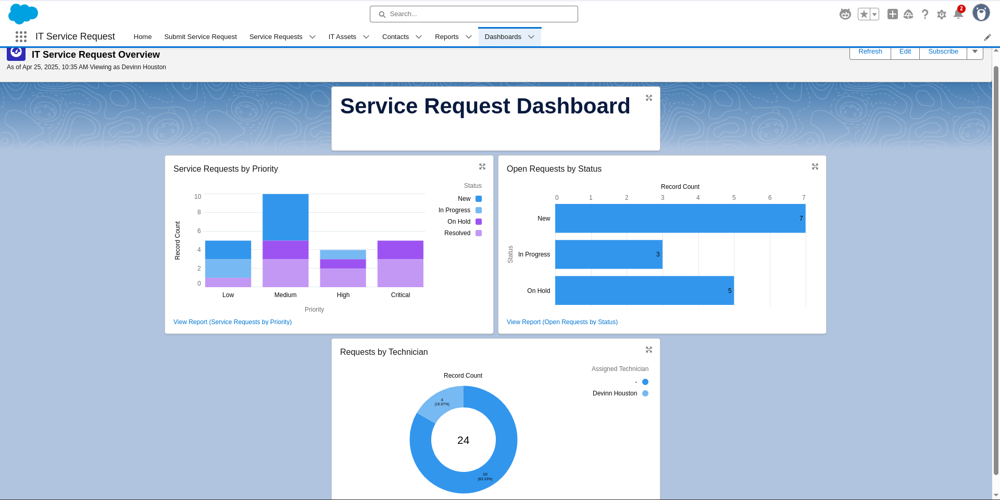

Devinn Houston
Salesforce Admin | IT Support | Python Development
About Me
I’m Devinn Houston, a Salesforce Certified Administrator and IT Support Specialist with over a decade of experience supporting users, systems, and business operations. My background spans military-grade IT, K–12 field support, and CRM administration - blending hands-on technical skills with problem-solving that drives results.
Resume
Certifications
- Salesforce Certified Administrator
- Salesforce Certified Associate
- Salesforce Military Member (Talent Stacker Program)
- Incident IQ Certified Agent
- U.S. Army Signal Support Systems Certification
Projects
-
💼 Salesforce: Automated Employee Onboarding Flow
Built a record-triggered Flow that streamlines the employee onboarding process in Salesforce. The automation creates a series of onboarding tasks, sends a personalized welcome email, and updates onboarding status - all triggered by a single record creation. Leveraged custom objects, task automation, dynamic user assignment, and email integration to replicate real-world HR/IT workflows.




-
🛠 Salesforce: IT Service Request App
Designed and built a complete IT Service Request application in Salesforce. The app handles ticket submissions, technician assignment, automated email notifications, and service request tracking with dashboards - providing an end-to-end IT support solution.




Contact
Email: devinnhouston@gmail.com
Phone: (916) 846-2868
LinkedIn: linkedin.com/in/devinn-houston